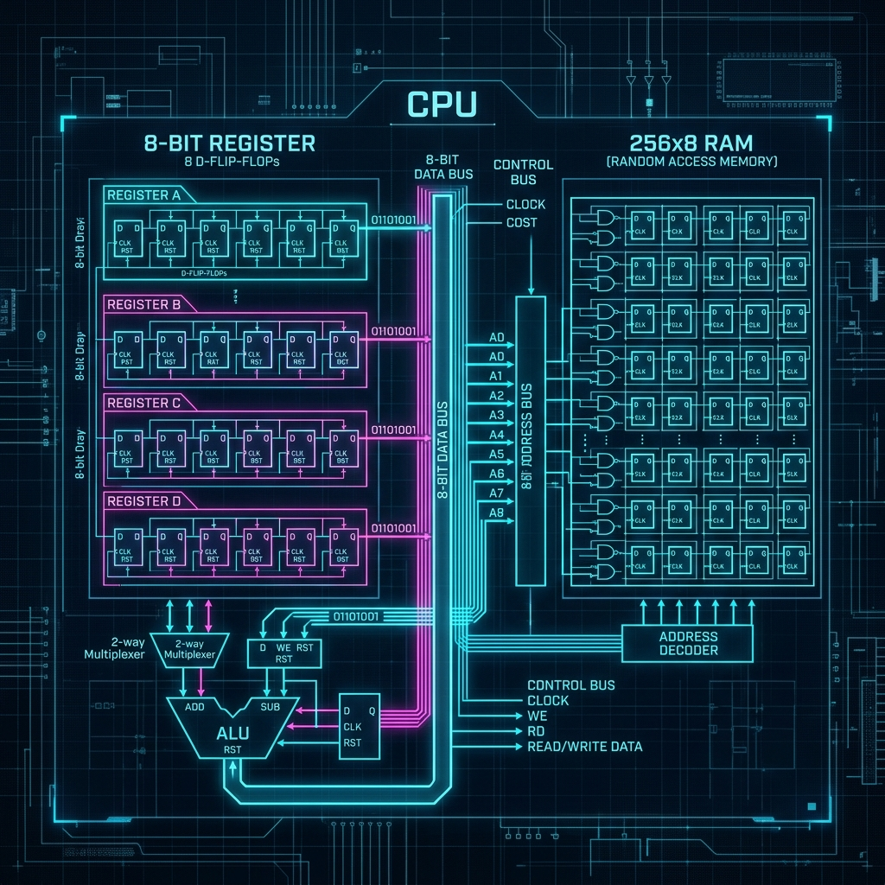

Introduction to State in Digital Logic
When designing an 8-bit computer from scratch, combinational logic alone is insufficient. Combinational logic gates, such as AND, OR, and XOR, output values based strictly on their current inputs. However, to perform meaningful computation, a central processing unit (CPU) must possess the ability to remember previous states. This is where sequential logic and memory architectures come into play. In this third installment of our series on building an 8-bit computer, we will delve deeply into the architecture of CPU registers and Random Access Memory (RAM).
Memory inside a processor bridges the gap between static program instructions and dynamic execution. Every variable, every intermediary calculation, and every memory address pointer requires a physical mechanism for state retention. We begin at the lowest possible level: the cross-coupled gate, which forms the foundational building block for all static memory structures.

A conceptual visualization of our 8-bit CPU register and RAM architecture.
The SR Latch: Cross-Coupling Gates for Memory
At the heart of state retention is the Set-Reset (SR) Latch. By taking two NOR gates (or NAND gates) and feeding the output of one into the input of the other, we create a bistable circuit. This circuit has two stable states, traditionally defined as Q and Q-bar (the inverse of Q). The inputs are called Set (S) and Reset (R). When S is pulsed high, the latch enters the set state (Q=1). When R is pulsed high, it enters the reset state (Q=0). Crucially, when both S and R are low, the cross-coupled nature of the gates allows the circuit to perpetually hold its current state. It is, in essence, a 1-bit memory cell.
However, the SR Latch has a significant flaw: if both Set and Reset are asserted simultaneously, the latch enters an invalid state, leading to unpredictable behavior when the inputs are removed. Furthermore, an asynchronous latch responds immediately to its inputs, which makes synchronizing billions of operations per second across a CPU datapath virtually impossible. We need a way to control exactly when the state can change.
The D-Latch and Clocking
To resolve the invalid state issue and introduce synchronization, we evolve the SR latch into the Data (D) Latch. The D-Latch simplifies the inputs into a single Data (D) line and an Enable (E) or Clock (CLK) line. The circuitry internally ensures that Set and Reset can never be asserted simultaneously by using an inverter on the D input. When the clock is high, the Q output transparently follows the D input. When the clock goes low, the D-latch "locks" its current state, ignoring any further changes on the D line.
While the D-Latch is a massive improvement, it is level-sensitive. This means that as long as the clock is high, any glitch or noise on the Data line will immediately propagate through to the output. In a complex CPU architecture where signals take varying amounts of time to propagate through ALUs and buses, level-sensitivity introduces dangerous race conditions. If a register feeds an ALU, and the ALU feeds back into the same register, a transparent latch would allow the signal to loop uncontrollably during a single clock cycle.
The D-Flip-Flop: Edge-Triggered Precision
The definitive solution for CPU registers is the edge-triggered D-Flip-Flop. Unlike a latch, which is level-sensitive, a flip-flop only samples the input data at the precise moment the clock signal transitions (typically on the rising edge, from low to high). To achieve this, engineers traditionally combine two D-Latches in a Master-Slave configuration. The clock signal to the Slave latch is inverted.
During the low phase of the clock, the Master latch transparently accepts the D input, but the Slave latch is locked, keeping the final output stable. When the clock transitions to high, the Master latch instantly locks, trapping the value present at that exact moment. Simultaneously, the Slave latch opens, allowing the trapped value to propagate to the Q output. This edge-triggering ensures that the state changes exactly once per clock cycle, completely eliminating race conditions in the datapath. Below is a raw SQGATE JSON circuit representation of a D-Flip-Flop register logic:
{
"project": "D Flip-Flop Register Node",
"version": "1.0",
"gates": [
{"id": "d_ff1", "type": "d_flip_flop", "x": 300, "y": 200, "label": "Bit 0"},
{"id": "and1", "type": "and", "x": 150, "y": 180, "label": "Enable Gate"}
],
"wires": [
{"source": "and1.out", "target": "d_ff1.d"}
]
}
Scaling Up: The 8-Bit Register
With a robust 1-bit memory cell established, creating an 8-bit register is conceptually straightforward. We array eight D-Flip-Flops in parallel. All eight flip-flops share the same clock signal and the same Enable (Load) logic. When the CPU instruction decoder asserts the Load signal for this specific register, the current 8-bit value present on the data bus is latched into all eight flip-flops on the next rising clock edge.
In our 8-bit computer architecture, we implement several distinct registers: the A Register (Accumulator) for primary arithmetic, the B Register as a secondary operand buffer, and the Instruction Register (IR) to hold the current machine code instruction. Each of these registers is fundamentally identical at the hardware level; their specific purpose is dictated purely by how they are wired into the system bus.
Data Buses and Tri-State Buffers
A crucial concept in CPU design is the system bus. If every component in the CPU had direct wires to every other component, the routing complexity would be catastrophic. Instead, we utilize a shared 8-bit communication highway known as the Data Bus. However, a shared bus introduces a new electrical problem: if multiple registers try to output their values onto the bus simultaneously, it causes a short circuit and data corruption.
The solution is the Tri-State Buffer. A standard logic gate outputs a rigid High (1) or Low (0). A tri-state buffer adds a third state: High Impedance (High-Z). When in High-Z, the buffer is effectively disconnected from the circuit, behaving as an open switch. By placing tri-state buffers at the output of every 8-bit register, the control logic ensures that only one register is allowed to "speak" onto the bus at any given time, while all others are in High-Z, quietly "listening."
Random Access Memory (RAM) Architecture
While registers provide ultra-fast, tightly integrated storage for immediate calculations, their physical footprint is immense. A single D-Flip-Flop can require up to 6 logic gates (dozens of transistors). Storing kilobytes of data this way is unfeasible. For bulk storage, we turn to Random Access Memory (RAM). Unlike register files, RAM utilizes a grid matrix approach to drastically reduce the transistor count per bit.
In our 8-bit machine, we will implement a 256-byte RAM module. This requires an 8-bit address bus (2^8 = 256 locations). The core of the RAM architecture is the Address Decoder. When an 8-bit address (e.g., `01001101`) is placed on the address bus, the decoder translates this binary number into a single active line out of 256 possibilities. This single line activates a specific row (or wordline) in the memory matrix.
The Memory Matrix and Read/Write Cycles
Static RAM (SRAM), which we model in this project, still relies on cross-coupled inverters (similar to latches) for each bit cell, requiring about 6 transistors per cell (6T SRAM). When a wordline is activated by the decoder, the 8 bit-cells in that row connect their internal states to 8 vertical bitlines. During a Read cycle, sense amplifiers detect the faint voltage differences on these bitlines and output them as a solid 8-bit value onto the data bus via tri-state buffers.
During a Write cycle, the CPU places data on the bus, and strong write drivers force the bitlines to the corresponding voltage levels, overpowering the delicate cross-coupled inverters inside the active row and forcing them to flip to the new state. This delicate dance of reading and writing must be perfectly synchronized with the CPU's main clock to avoid latching unstable data.
Integration into the Datapath
To integrate the RAM into our datapath, we must introduce a Memory Address Register (MAR). The MAR is a dedicated 8-bit register whose sole job is to hold the address being supplied to the RAM. Because the RAM requires a stable address throughout the entirety of its relatively slow read/write cycle, the CPU cannot leave the address on the main bus, as it needs the bus to transfer the actual data.
By moving the address into the MAR, the main data bus is freed up. On the next clock cycle, the RAM can output the requested data onto the bus, where it can be consumed by the Instruction Register or the Accumulator. Alternatively, the CPU can place data onto the bus and pulse the RAM's Write Enable line, committing the byte to memory.
Memory-Mapped I/O
In our architecture, we employ a paradigm known as Memory-Mapped Input/Output (MMIO). Rather than utilizing specialized I/O instructions (like `IN` or `OUT` seen in some architectures like x86), we connect peripheral devices directly to the system bus and assign them specific addresses. For example, if we wire an LED matrix to address `11111111` (0xFF), writing a byte to this memory location does not go to the RAM matrix. Instead, the address decoder routes the write pulse directly to the LED controller's register.
This creates a wonderfully unified programming model. To the CPU, communicating with a display, a keyboard, or a storage drive uses the exact same `LOAD` and `STORE` machine instructions as reading and writing ordinary variables in RAM. This elegant simplicity is a hallmark of clean computer architecture design.
Summary
Building the memory architecture of an 8-bit computer reveals the profound ingenuity of digital abstraction. We started with chaotic, cross-coupled logic gates and tamed them with clocks and edge-triggering to create reliable D-Flip-Flops. We scaled these into 8-bit registers and orchestrated their communication using tri-state buffers on a shared system bus. Finally, we expanded our storage capabilities infinitely using the matrix addressing of RAM.
In the next part of this series, we will take these static memory components and inject mathematical life into them by designing the Arithmetic Logic Unit (ALU). We will explore how binary adders, logic operators, and condition flags allow our CPU to actually perform computations on the data we can now reliably store.